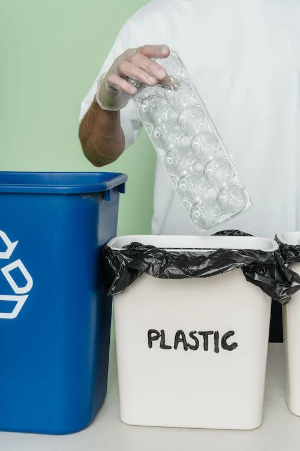

Reciclagem de objetos
A importancia da reciclagem na vida das pessoas


A reciclagem é um processo de transformação de materiais descartáveis em novos insumos e produtos. Apesar de ser uma prática antiga, atualmente as políticas de reciclagem são fundamentais para a preservação ambiental, assim como para o desenvolvimento econômico. Ela geralmente é realizada por meio da coleta seletiva, que envolve a separação adequada do lixo e possui cores que possibilitam a distribuição correta dos materiais recicláveis conforme a sua origem.